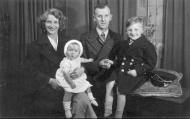

SATURDAY 6th APRIL 1940
Clarice christened
Mammy & Daddy took me to St. Paul’s Church to have my baby sister christened. She is called Clarice Rosalind Williams.
|
...
THURSDAY 18th APRIL 1940
Royal Visit
The King and Queen have been to Birmingham today. They came on the train to Small Heath station and visited Daddy’s works [B.S.A., Birmingham Small Arms] to see them making guns for the Army and Browning machine guns for the R.A.F. The King was in an Air Marshal’s uniform. Afterwards they went to the Morris factory at Ward End and to Calthorpe Park to see a mock Air Raid.
|
WEDNESDAY 1st MAY 1940
| |
Rail fares have gone up 10%. It will now cost £1 1s 8d to London.
|
|
FRIDAY 10th MAY 1940
|
Mammy and Daddy have been listening to the News. The Germans have invaded Holland, Belgium and Luxembourg.
|
SATURDAY 11th MAY
Churchill Prime Minister
Mammy and Daddy have been talking about Mr. Chamberlain resigning. It was on the News at 9 last night that Mr. Churchill is the new Prime Minister. Daddy says he is a warmonger.
|
MONDAY 13th MAY 1940
|
It is Whit Monday today. The War is on but nothing much is happening.
|
SUNDAY 26th MAY 1940
Working round the clock
Daddy had to go to work today. He is on munitions. People are going to work every day now. Today is a National Day of Prayer. Mammy has taught me to pray, Bless all the soldiers, sailors and airmen. Amen.
|
TUESDAY 2nd JULY 1940
All clear
The sirens went last night at 11.30 p.m. last night, a terrible wailing noise, we were very frightened but nothing happened. The All Clear sounded at 1.45 a.m. this morning. There was no bombing.
|
WEDNESDAY 31st JULY
|
It is my birthday today. I am 5. Mammy says I was born on a Wednesday. Hitler says we have got to give in.
|
MONDAY 5th AUGUST 1940
August Bank holiday
It is August Bank Holiday. Mammy took us to the park. A lot of people went to the Lickey Hills and Dudley Zoo. It was very hot.
|
TUESDAY 6th AUGUST
SATURDAY 10th AUGUST
Start of the bombing
It was very frightening last night. A German aeroplane came over and we could hear the bombing. Everything went quiet and we thought the Germans had gone away. Then the Air Raid siren went with a terrible noise, but nothing else happened all night.
|
WEDNESDAY 14th AUGUST
Castle Bromwich bombed
The Germans came again last night and bombed the factory at Castle Bromwich where they make Spitfires.
| |
The factory was severely damaged. 7 people were killed, including 5 factory workers, and 41 injured. The Nuffield aero factory at Witton was also bombed with one man killed and 41 injured. 187 houses were damaged and 8 totally destroyed. The raid was carried out by bombers of Kampfgruppe 100 operating from Vannes in Britanny. They moved there only on Sunday of this week from Germany. They are a special unit with about 30 Heinkel 111s equipped with X-Gerät, a system enabling bombs to be dropped automatically exactly over the target.
|
EIGHT BOMBS IN MIDLANDS. A lone raider was over a Midland village last evening and dropped eight high-explosive and incendiary bombs, all of which fell in a playing field which was deserted at the time. No one was injured. The windows in a few houses were smashed and a fence caught fire. This was quickly extinguished by the local A.F.S. The plane was flying fairly high, but it was possible to distinguish that it was a large bomber. After the bombs had been dropped, the machine made off at a high level. (Birmingham Gazette, Thursday 15th August 1940)
|
THURSDAY 15th AUGUST
Under the stairs
The bombers came again last night. It sounded very close and we were terrified, huddling under the stairs.
There is going to be a National Day of Prayer on Sunday 8th September.
| |
Bombs fell on Erdington, Stechford, Yardley and Bordesley Green. The Singer works on Coventry Road was hit, and other factories. Two families were wiped out when a bomb fell on the shelter at 84 Bordesley Green East — the Wall family and the Gadds from 82 — and 2 nurses were seriously injured when their nursing home was bombed. The first incendiary bombs fell at 12.30am this morning and high explosives at 12.59am. The Air Raid sirens went at 1.37am.
|
MIDLAND TOWN RAIDED. A Midland town had its second raid in three nights. As on the previous occasion, the raid was apparently carried out by successive waves of aircraft at intervals of about half-an-hour. Bombs were dropped in suburban districts and several “whistling bombs” were heard. At times gunfire was intensive and the sky was ablaze with searchlights. Incendiary as well as high-explosive bombs were dropped, but fires were quickly brought under control and damage generally was slight. Eight casualties detained in one hospital. (Birmingham Gazette, Friday 16th August 1940)
|
FRIDAY 16th AUGUST 1940
|
Last night was terrible, the bombing was so close. Daddy says they were aiming at Castle Bromwich aerodrome.
| |
Castle Bromwich, Ward End (where we live) and Shard End were hit. No one was killed and only one person seriously injured
|
|
SATURDAY 17th AUGUST
|
We did not have an air raid last night so I stayed in bed. The Germans bombed London instead.
Gone with the Wind is still on in town at the Futurist.
|
SUNDAY 18th AUGUST
|
We had another bad raid last night. It was the third in five nights.
BOMB DIGS HOLE FOR MIDLAND MAN’S AIR RAID SHELTER. FELL ON PICKED SPOT. Damage in Saturday night’s Midlands raid — the third in five nights — was very slight, and was confined to dwelling-houses and growing crops. One bomb shattered the windows and damaged the roofs of seven modern semi-detached houses; a number of dwelling-houses were damaged when another bomb fell into a housing estate. Five bombs which fell into a spinney uprooted trees but caused no damage to property. A high-explosive bomb fell into a field of oats, another into a field of turnips, and a screaming bomb, which fell on common land between two public air raid shelters, made a crater ten feet wide and 15 feet deep, but there were no casualties. Another bomb which fell into a roadway in a minor road burst water and gas mains. A motor-cyclist who drove into a bomb crater and was injured was the only casualty. Bombs were dropped early yesterday on a residential district near another Midland town. One unoccupied house was entirely demolished and another partially wrecked, the only two room left being a bedroom occupied by the owner and his wife and the lounge beneath. Most of the bombs fell on soft ground and caused no damage, but one which made a direct hit on a road shattered the windows and brought down tiles from the roof of many houses in the vicinity. There were no personal injuries. One resident stated that a bomb which had made a large crater in his back garden would save a lot of digging in preparation for an air-raid shelter which is to be erected there during the week. (Birmingham Gazette, Monday 19th August 1940)
|
MONDAY 19th AUGUST
TUESDAY 20th AUGUST
|
We had another air raid last night.
MIDLANDS BOMBED. In raid on Midlands early today 50 incendiary bombs dropped in rural areas. Unexploded bomb fell on Midland town and delayed-action bomb in another Midland town. No damage and no casualties. (Birmingham Gazette, Tuesday 20th August 1940)
|
WEDNESDAY 21st AUGUST
|
It was quiet last night. Sir Oliver Lodge has died — he was the first Principal of Birmingham University.
WHITE ROCKETS SEEN IN MIDLAND RAID. White rockets were seen bursting in the sky in two Midland towns during enemy air-raids on Monday night and early yesterday morning. They were observed in two districts in one town and three districts in another. In another town a thin stream of smoke was observed to hang in the moonlight after aircraft had passed over. Another raider followed also leaving a trail of smoke, followed by more aircraft flying high. Bombs were heard and AA guns in the distance. Bombs were dropped in widely scattered areas and in one town four people were killed when two bombs struck two blocks of semi-detached houses. Not many people seem to have heard the aircraft before the bombs were dropped. (Birmingham Gazette, Wednesday 21st August 1940)
PROTEST FROM MIDLAND TOWN. Indignation is expressed by inhabitants of a Midland town in which some people were killed in a raid because sirens were not sounded to give warning of approaching enemy aircraft. Most of the people were asleep in their homes, including those killed. First news they received of the raid was the explosion of bombs. It was only after then that they were able to run to their shelters. It is understood the sirens were sounded some time later. (Birmingham Gazette, Wednesday 21st August 1940)
There were reports earlier yesterday[Wednesday] of raids by planes singly or in twos from south-east, south-west and north-west England, the Midlands and Wales. Children were among killed and wounded in the Midlands raid. (Birmingham Gazette, Thursday 22nd August 1940)
|
THURSDAY 22nd AUGUST
|
We had another raid last night. People are still complaining about the sirens not being sounded.
SHELL WRECKS CHURCH. Damage caused by shells wide-spread, but few casualties. One shell exploded inside church and wrecked interior. Two houses badly damaged but occupiers escaped. At midnight women left homes with bedclothes to sleep in shelters. (Birmingham Gazette, Friday 23rd August 1940)
|
FRIDAY 23rd AUGUST
|
The Germans keep coming every night. Everybody is very frightened but God will keep us safe.
AFTER BRITISH RAID NAZI BATTERIES SILENT YESTERDAY, BUT — MIDLAND WORKERS GUNNED, R.A.F. LAUNCH ANOTHER NIGHT ATTACK ON BOULOGNE. German airmen raiding parts of England yesterday concentrated on machine-gunning defenceless workmen in the Midlands and one Eastern district.
MIDLAND POLICE STATION GUNNED. This is the story of the low-flying attacks on the Midlands yesterday, as told by the Air Ministry news service. German airmen, encouraged by heavy cloud, were able to practise individual low-flying attacks. Among the interesting targets they selected were the streets of a spa, the grass of a racecourse, the cottages of a small village and a police station — all in the Midlands. The spa street and police station were machine-gunned, the racecourse and village were dealt with by bombs. There was one casualty in the village. (Birmingham Gazette, Saturday 24th August 1940)
|
SATURDAY 24th AUGUST
|
We had another Air Raid last night.
MIDLAND RAID THIS MORNING. Believed enemy raider circled over Midland town early today for half-hour. Moved off eastwards and eight explosions, believed bombs, heard. Later raiders again believed over same town. Reported incendiary bombs were dropped in this town and in another Midland town. Bombs fell near a building. No casualties. (Birmingham Gazette, Saturday 24th August 1940)
|
SUNDAY 25th AUGUST
|
We had another bad raid last night.
MIDLAND RAIDS. Bombs were dropped in a number of places in Midlands last night. A theatre and a number of shops were damaged in one town. Incendiary bombs were also dropped in another small town. Six of several casualties in a Midlands town on Saturday night belonged to one family. Mr. and Mrs. Prince and two children killed. Two children were seriously injured. The house and shelter completely demolished by what was believed to have been an aerial torpedo. Families on both sides (also in shelters) were unhurt. Shrapnel fell on houses like rain. Considering the length of the raid, and the number of bombs dropped, damage was comparatively slight. (Birmingham Gazette, Monday 26th August 1940)
GERMANS CLAIM DAMAGE IN BIRMINGHAM. Serious damage to an aircraft factory at Birmingham is claimed in the German High Command communiqué yesterday. “A number of night raids by our bombers resulted in considerable damage to harbour installations at Bristol, fires and explosions in the oil depot at Thameshaven, and serious damage to various aircraft factories at Derby, Birmingham. Kingston, and Rochester. The mining of English harbours was continued.” (Birmingham Gazette, Monday 26th August 1940)
|
MONDAY 26th AUGUST
The Market Hall destroyed
There was a very bad Air Raid last night. The Market Hall was bombed and the town was on fire all night. Mammy always takes me to the Market Hall when we go up town on the tram. We go to see the animals.
| |
The Market Hall suffered a direct hit from a high explosive bomb, followed by incendiary bombs which set the whole Bull Ring area on fire. Many shops were damaged or destroyed in Corporation Street, Whittall Street and elsewhere in the City centre. Some 145 high explosives were dropped. 29 people were killed, 20 seriously injured, and 6 factories were hit including ICI at Witton, and 450 houses damaged. The German Radio Beam system Knickebein employs two beams — one from Stollberg in Denmark and the other from Kleve in western Germany; they intersect over Birmingham.
|
MIDLAND RAIDS. High explosive and incendiary bombs dropped in Midlands. At one time half a dozen fires could be seen in one area.
CORRECTION. Performances at Birmingham Theatre Royal will end at 9.20 each evening — not 9 pm as stated in advertising columns.
1,800 BOMBS WERE DROPPED, SAY NAZIS. Germany yesterday boasted that during the night’s raid on Britain 1,500 [sic] bombs were dropped weighing about 147 tons. The claim was made by the German High Command communiqué issued yesterday afternoon. It said: The German Air Force attacked last night nine airfields and a number of factories, railways, and anti-aircraft gun establishments at 38 different places. Many planes bombed Coventry, Birmingham and Kingston. Aero works and arms works were the targets. Explosions and huge fires were observed.“ It may now be made known that the church hit in London during Saturday night’s raid was St. Giles’, Cripplegate. The statue of Milton outside the church was hit. (Birmingham Gazette, Tuesday 27th August 1940)
|
TUESDAY 27th AUGUST
Inferno
Last night was worse than anything. The Air raid lasted 5½ hours. Mammy and Daddy held me tight as we huddled in the dark under the stairs covered with bedclothes. The noise was terrible, with the drone of German planes going round in circles, Ack-Ack guns firing and bombs exploding. I know when they are German planes by the funny sound they make and it frightens me.
| |
The sirens went off at 9.49pm, the first bombs dropped at 11.12pm, and the All Clear sounded at 3.15am. The City Centre was again the main target. Many business premises were gutted by fire and Great Charles Street was an inferno. 20 people were killed and over 80 injured. The B.S.A. factory in Montgomery Street where my father works was badly damaged and production disrupted.
|
THE NIGHT’S RAIDS. A.A. guns were in action in London areas last night. Raiders also over towns in north-west, south-west and south-east English towns and Wales. Enemy planes were heard over the millions for the fourth night in succession. Bombs fell and a fire was seen. At N.E. town plane swooped low and machine-gunned indiscriminately. Airmen trained guns on a good strain, but no damage or casualty was caused. Passenger train also machine-gunned. Some people fainted but none injured. Train stopped in a tunnel and Spitfire chased plane away. (Birmingham Gazette, Wednesday 28th August 1940)
HUNDREDS OF BOMBS ON MIDLANDS — NOT ONE WAR TARGET HIT. For the third successive night enemy raiders visited a Midland town, distributing high-explosive and incendiary bombs indiscriminately. At one period during the night firemen were dealing with half-a-dozen fires at industrial premises within a radius of 300 yards, whilst other fires raged in suburban area of the same town. Though hundreds of bombs, both high-explosive and incendiary, were dropped, casualties were few, and no objects of military importance were hit. Yesterday afternoon the siren sounded again, but the all-clear was given soon afterwards. No bombs were dropped. (Birmingham Gazette, Wednesday 28th August 1940)
|
WEDNESDAY 28th AUGUST
|
The Air Raid was very bad last night
“MASS ATTACKS ON BIRMINGHAM”. “Mass attacks by German bombers were directed last night against a number of localities in the Midlands and South of England” said the German News Agency yesterday. “Still stronger units repeatedly and severely bombarded in particular the motor works at Derby and aircraft and motor works at Birmingham. Plants of the Spitfire production works near Birmingham suffered severely. Extensive fires observe by succeeding German aircraft indicated the success of the first attack. The British anti-aircraft fire was completely ineffective. Searchlight batteries rarely succeeded in picking out a German machine.” (Birmingham Gazette, Thursday 29th August 1940)
|
THURSDAY 29th AUGUST
|
We had another Air Raid last night.
NIGHT RAIDS. Enemy planes last night reported over the Midlands and S.E., S.W., N.E. and N.W. England. Gunfire heard in London area last night. Planes believed enemy over suburbs. (Birmingham Gazette, Friday 30th August 1940)
| |
According to the War Cabinet, Chiefs of Staff Committee, Weekly Résumé No.52, during the past week 33 people have been killed in Air Raids in Birmingham. (Birmingham Gazette, Friday 30th August 1940)
|
|
FRIDAY 30th AUGUST
SATURDAY 31st AUGUST
SUNDAY 1st SEPTEMBER 1940
|
The Air Raid last night lasted 5 hours.
LATE NEWS. MIDLAND RAID. Enemy planes over Midland town last night. Planes also over Wales and a South-west town late last night.
MIDLAND RAIDS (See above). Enemy planes over another Midland town last night. Explosions heard but no A.A. fire or searchlights. (Birmingham Gazette, Monday 2nd September 1940)
|
MONDAY 2nd SEPTEMBER 1940
|
Mammy took me up town and we saw the bomb damage. The Town Hall and the Council House have been hit, also the Art Gallery and the University and the Cathedral in Colmore Row. Some Birmingham children have been saved sailing to Canada.
EVACUEE SHIP TORPEDOED. BIRMINGHAM CHILDREN AMONG 320 ON BOARD; ALL SAVED. SANG AS THEY TOOK TO LIFEBOATS. Birmingham children were among those aboard a British evacuee ship on its way to Canada, which has been torpedoed in the Atlantic by a U-boat. Not a single child was lost. More than 70 of the children were landed at a Scottish port early yesterday. The vessel was carrying 320 children and other passengers, but there was only one casualty — the purser of the vessel. The children had been trained by experts in lifeboat drill and to this is attributed the remarkably small casualty list. The children sang “Roll out the Barrel” and “Oh Johnny Oh” as they took to the lifeboats. Many of them were in pyjamas but they were still singing. Most of the children landed clad in little more than pyjamas. Not more than a dozen had stockings. They wore coats of all kinds and blankets. Only the splendid training in boat drill they had received and their coolness in the face of danger can account for their return to safety from an ordeal which lefts its trace on members of the crew. Mr. Geoffrey Shakespeare, Dominions Under-secretary, who welcomed the children, described their return as “a miracle.” The children had sailed under the supervision of Mr. C. H. Hindley, headmaster of Stoke School, Gosport. (Birmingham Gazette, Monday 2nd September 1940)
RAIDERS SCATTER INCENDIARIES. WOMAN PRAYED AS BOMB FELL — SHE WAS UNHURT. When a special constable forced his way into the ruins of a house hit by an enemy bomb in a South-western coastal town he found an old woman kneeling beside her bed and praying. She was surrounded by broken glass and debris Y but the room was the least damaged in the house. In a bedroom adjoining that in which the praying woman escaped, another old woman was buried by falling rafters, plaster and masonry, and had to be rescued. She escaped with minor injuries and shock. A bedroom above was completely demolished, with the bed hanging into space. The occupants of the house had left on holiday earlier in the day. (Birmingham Gazette, Monday 2nd September 1940)
|
TUESDAY 3rd SEPTEMBER
|
We had another Air Raid last night. The War has been going on for a year. The picture houses, theatre shows and dance halls are going to close at 9p.m. from tonight. Gone with the Wind is still on at the Futurist.
CAPITAL CROWDS CHEER SIGHT OF A CENTURY. R.A.F. SWEEP LONDON SKY AGAIN. ROUTED RAIDERS FLEE IN SCATTERED MASS. By a Special Correspondent. Thousands yesterday evening watched what one of the many Empire soldiers among them described as “the sight of the century” — German raiders fleeing pell-mell before the defences of London. All day long — from the time of the city’s first warning at 8am — the Nazi Air Force had tried to attack. Time and time again they were flung back, and before London’s sirens had wailed for the second time 25 raiders had been shot down. Four fell victims to the A.A. gunners. Seven British fighters were lost, but four pilots are safe. (Birmingham Gazette, Tuesday 3rd September 1940)
46 OF OURS DOWN, SAY NAZIS. In a statement last night the German News Agency claimed that 46 British planes had been shot down in air fights over southern England yesterday, and that six had been destroyed on the ground. Twelve German planes had not yet returned, it was added. (Birmingham Gazette, Tuesday 3rd September 1940)
LATE NEWS. MIDLAND SHELTER HIT. Bomb scored direct hit on shelter on outskirts of a Midland town last night. Parachute flares and incendiary bombs dropped in two rural area. (Birmingham Gazette, Tuesday 3rd September 1940)
|
WEDNESDAY 4th SEPTEMBER
THURSDAY 5th SEPTEMBER
LATE NEWS. GOVERNMENT TO START ROOF-TOP WATCH. Understood officially that when Commons resumes statement is to be made that raid warnings may be more frequent, but nation-wide system of roof-top watchers is to be introduced to counter-balance loss in working hours. Householders also officially urged to adopt similar system by sleeping in downstairs rooms or shelters until watcher gives alarm. In Government Departments important divisions, already on lower floors, carry on after siren until “double alarm” is received. Top-floor workers go to shelter at once. Fighter Command ignores lone planes. Sirens only sounded if big attack seems imminent . A.A. fire also held if only one plane is approaching. (Birmingham Gazette, Thursday 5th September 1940)
CHILDREN’S LINER SALVAGED. Four tugs have towed into a North British port the liner which was torpedoed while carrying children to Canada. (Birmingham Gazette, Thursday 5th September 1940)
|
FRIDAY 6th SEPTEMBER
|
We had another Air Raid last night.
NIGHT RAIDS. What appeared to be a heavy force of enemy raiders passed over N.E. coast last and proceeded towards the Midlands. British fighter patrols were active, and searchlights swept skies. Enemy plane circled over a Midland town and dropped flares on outskirts. Planes last night over Midland town and two areas in south-west. Bombs on two Midlands country districts and one Midland town. When another force crossed East Coast heading inland, noise of engines suggested it was largest force flying over this area since air war began. (Birmingham Gazette, Friday 6th September 1940)
|
SATURDAY 7th SEPTEMBER
|
We had another Air Raid last night. Gone with the Wind is still on at the Futurist but they have changed the times to 12.15 and 4.15 p.m. All seats are bookable but it is 3/6d or 4/6 to get in.
RAID WARNING SIREN CUT BY HALF. Instructions have been given by the Ministry of Home Security to reduce the period of sounding of the air-raid warning siren (warbling note) from two minutes to one minute. The “raiders past” signal (steady blast) will continue to be sounded for two minutes. Germany reduced her warning from two to one minute some weeks ago.
WHISTLE TRY-OUT. During yesterday’s raids in one London district the sounding of wardens’ whistles preceded the siren. The wardens made an extensive tour of streets and thoroughfares before the siren was heard, and ’bus drivers on the main routes found that the system worked extremely well, the whistles being distinctly heard above the roar of the ’bus engines. It is understood that this is purely an experiment. (Birmingham Gazette, Saturday 7th September 1940)
LATE NEWS. RAIDERS OVER MIDLANDS. Enemy aircraft reported over a Midland town and a town in the north-east. (Birmingham Gazette, Saturday 7th September 1940)
|
SUNDAY 8th SEPTEMBER
|
We had a quiet night last night.
NUISANCE RAID IN MIDLANDS. The Midlands had a nuisance raid lasting some hours, and starting in the early hours yesterday. Planes were heard at intervals over one town, but no bombs were dropped in the area. Five explosions were heard near another town, but they proved to be bombs dropped in open country. There were several raids during Saturday night in a Welsh coastal district, but no bombs appear to have been dropped. (Birmingham Gazette, Monday 9th September 1940)
|
FRIDAY 27th SEPTEMBER
|
The Germans came over at 5.30 this afternoon.
| |
Last night 3 shelters at Barker Street, Villa Street and Witton Road suffered direct hits. 27 were killed and 23 injured.
|
|
SATURDAY 28th SEPTEMBER
|
The German planes came over again last night about 8 p.m..
| |
They attacked Fort Dunlop.
|
|
TUESDAY 15th OCTOBER 1940
|
Mrs. Churchill visited Birmingham today. There was a parade past the Hall of Memory and a barrage balloon for War Weapons Week.
|
WEDNESDAY 16th OCTOBER
A terrible raid
We had a terrible Air Raid last night, a lot of houses and factories were bombed. Bombs rained down.
| |
22 aircraft of Kampfgruppe 100 took part in the raid.
|
|
THURSDAY 17th OCTOBER
Carlton Cinema hit
| |
20 people were killed tonight in the Carlton Cinema in Taunton Road, Sparkbrook They had gone to see Dorothy Lamour and Robert Preston in Typhoon. A High Explosive bomb came through the roof and burst in the orchestra stalls.
|
|
FRIDAY 25th OCTOBER
|
There was a very bad Air Raid last night.
| |
The Cathedral was bombed and also St. Martin’s Church in the Bull Ring. Marshall and Snelgrove’s was hit by high-explosive and incendiary bombs and is still on fire. C & A in Corporation Street, Greys in Bull Street and Boots in High Street were all on fire. The Fire Brigade had to call for help from Bristol, Leicester, Manchester, Bolton and Oldham.
|
|
SATURDAY 26th OCTOBER
|
There was another Air Raid last night.
| |
The First Aid Post at Kent Street Baths was hit twice by incendiary bombs at about 8 p.m. and by high explosives at 9.30 p.m.. 3 were killed and 10 injured, 2 of whom died later in hospital. The Wesleyan and General Assurance Society in Steelhouse Lane sustained a direct hit. W.J. George Ltd in Great Charles Street was hit by incendiaries. |
|
MONDAY 28th OCTOBER
|
Italy has declared War on Greece.
|
TUESDAY 29th OCTOBER
|
We had another terrible Air Raid last night at about 8 p.m.. We were very frightened with the noise of the bombs and guns firing at the German planes.
| |
Henry’s five-storey department store, facing Corporation Street and High Street, was gutted. The Midland Bank in Bennetts Hill and New Street was hit, and incendiary bombs fell on the roof of the Cathedral. In the Bull Ring St. Martin’s was hit, also the Empire Theatre in Hurst Street. Smallbrook Street was hit. There were more than 260 fires in the city, Northfield, Harborne, Edgbaston, Moseley, Handsworth, Lozells, Saltley, Small Heath and Aston were bombed.
|
BOMBED CATHEDRAL HEROES. CLERGYMAN”S WIFE HELPED. It can now be revealed that the Birmingham Cathedral, Bristol-road Methodist Church, and a number of well-known shops in Corporation-street were damaged by Nazi bombers during a recent attack on the city centre. Coventry’s Cathedral and famous St. Mary’s Hall also suffered. A shower of incendiary bombs fell on Birmingham’s Cathedral-church of St. Philip, and penetrated the leaden roof to the plaster roof beneath. Charred debris fell to the aisles. One of the clergy, assisted by his wife and a number of civilians, carried all the tapestries and vestments to safety. Prompt action by the fire services confined the damage to the roof, the choir stalls and other furnishings being dragged into the churchyard while the blaze was being fought. The Methodist Church, Mother Church of the important circuit of churches, was severely damaged as a result of incendiaries. A well-known women’s outfitters, shoe stores, and a portion of an arcade in the popular region of Corporation-street were damaged by high-explosive and incendiary bombs. (Birmingham Gazette, Thursday 14th November 1940)
|
WEDNESDAY 30th OCTOBER
| |
According to the War Cabinet, Chiefs of Staff Committee, Weekly Review No. 61, by 6 a.m. this morning 149 have been killed in Birmingham this week alone.
|
|
FRIDAY 1st NOVEMBER 1940
Daylight raid
Today the Germans have come over in the daylight and dropped bombs on us. Vauxhall Station has had to be closed.
|
SATURDAY 2nd NOVEMBER
Sailor suit
Mammy and Daddy have taken me and the baby to have my photo taken in my sailor suit.
After yesterday’s Air Raid in the daytime we had two more raids last night.
| |
16 back-to-back houses in Guildford Street, Lozells, were totally destroyed. People were trapped in their cellars with fire raging above them. 13 people were killed but many more survived. |

Mammy, Clarice, Daddy and me; studio photo by Louis
|
WEDNESDAY 6th NOVEMBER
|
We had another Air Raid last night.
| |
A bomb exploded in the air as it was coming down over Malmesbury Road, Small Heath. The blast caused a lot of damage. |
|
SATURDAY 9th NOVEMBER
Plane crash at Stechford
A terrible thing has happened. A plane has crashed at Stechford not far from us. Everybody is talking about it.
| |
The British Avro Anson flew into a barrage balloon cable and crashed onto the L.M.S. railway line near Hill House Lane bridge, killing the 5 crew. The accident was not officially reported. |
|
MONDAY 11th NOVEMBER
Neville Chamberlain is dead
Poor Mr. Chamberlain the peacemaker is dead. He died on Saturday night. He was 71. He was M.P. for Edgbaston, so all the flags are at half-mast and people are wearing black on their sleeves. The War made him ill. The Germans tried to drop bombs on his house in the country but they missed.
WEST MIDLAND NIGHT RAID. High-explosive bombs were dropped in a Midland country district last night. No casualties are reported. In an industrial area a number of high-explosives were dropped, damage being slight. (Birmingham Gazette, Monday 11th November 1940)
Germany’s communiqué yesterday claimed that on Sunday night, “in a factory of the aircraft industry near Birmingham large columns of flames were seen coming from the target.” (Birmingham Gazette, Wednesday 13th November 1940)
|
TUESDAY 12th NOVEMBER
SAYS GERMANY. German radio stated this morning: “In heavy daylight attacks yesterday military objectives were attacked in the Midlands, including factories and supply centres. In Birmingham several gasometers were set on fire. Strong forces of German bombers also made attacks against London, Portsmouth and Ramsgate.” (Birmingham Gazette, Tuesday 12th November 1940)
| |
Churchill has been told today that Enigma decrypts from Bletchley Park indicate that a major German bombing attack is in the offing, codenamed Moonlight Sonata, “of very considerable dimensions.” Information gleaned from a German pilot shot down on Saturday the 9th indicates that Coventry and Birmingham are to be attacked in a colossal raid planned to take place between the night of the 15th — when it will be full moon — and the 19th. Counter-measures, codenamed Cold Water, are immediately implemented.
|
|
WEDNESDAY 13th NOVEMBER
Daylight raid
The Germans came over this afternoon and bombed us.
| |
The attack was on the Austin works at Longbridge. 7 High Explosives were dropped, three of them falling on the L.M.S. railway line to Bristol.
|
EIGHT DIE IN MIDLAND DAY RAID. A lone raider dropped high-explosive bombs on a Midland town yesterday afternoon and caused some casualties, eight of which were fatal. Also some business premises were damaged. Thousands of people saw for the first time an enemy plane being attacked by ground defences. Later Spitfires chased the raider, which made off into the clouds. The raider was reported to have machine-gunned part of another town. For a while the raider circled about at a great height. Then gun-fire was heard. The Spitfires swept on to the scene and bursts of machine-gun fire rising above the drone of the machines’ engines indicated that the fight was on. People ran into the streets, shopkeepers left their counters, and children coming home from school gazed skywards open-mouthed. There were several further bursts of machine-gun fire, and when the raider was put to flight there were cheers from the spectators. High-explosive bombs were dropped and a water main was fractured. Last night’s official communiqué said: “Scattered raids have been attempted in several parts of the country today, most of them in South-east England. In none of these were many bombs dropped, and scarcely any damage or casualties were caused anywhere. Four German bombers have been destroyed during to-day.” (Birmingham Gazette, Thursday 14th November 1940) [[]]
HAMBURG (AS BIG AS BIRMINGHAM) IS A BOMB RUIN. “HUSH” HAVOC LEAKS OUT. Hamburg faces bankruptcy. Every report reaching London emphasises the bomb-blight on this once-great seaport, the second largest city in Germany and home of more than 1,150,000 people, said the Air Ministry last night. Damage to factories in this “Birmingham” of Germany daily becomes more serious. More and more industries are being transferred to Eastern cities or to occupied Poland. The docks no longer bustle with trade. The burnt-out shells of warehouses, the smashed wharves, tell the tale. Yet all reports agree that the damage is confined to the docks and industrial districts, and that the city itself has been hardly affected. This is a striking tribute to the accuracy of our bombing. (Birmingham Gazette, Wednesday 13th November 1940)
Nazis Say … Despite unfavourable conditions, says the Nazi communiqué, strong formations of the German Air Force continued their reprisal attacks during Tuesday night. Numerous fires and explosions were started in London. Liverpool and Coventry were also the targets of successful bombing attacks. During yesterday [Wednesday] bombers attacked London and other important military objectives in south and central England and plastered aerodromes, railway installations and an armaments factory near Birmingham with bombs. (Birmingham Gazette, Friday 15th November 1940)
|
THURSDAY 14th NOVEMBER
|
We slept all last night without the sirens going.
| |
In Germany Reichsmarschall Hermann Goering has gone for a holiday at a hunting lodge in east Prussia but is staying in touch with Field Marshall Erhard Milch whom he has left in charge of the Luftwaffe. Milch is ensconced in a railway carriage in a siding at La Boissiere-le-Deluge near Beauvais, and is planning to attack Coventry.
|
|
FRIDAY 15th NOVEMBER
Worst raid yet
We had another terrible Air Raid last night, worse than anything.
NIGHT RAIDER DOWN IN MIDLANDS. A RAIDER WAS BROUGHT DOWN DURING AN ATTACK ON A WEST MIDLAND TOWN LAST NIGHT. It is understood that A.A. fire hit it. It crashed near Bilton Grange, which is in the vicinity of the Rugby-Dunchurch road. Another raider is believed to have been crippled. It was last seen over a nearby district flying very low. High-explosive and incendiary bombs were dropped on a Midland town. Fires were started and two banks were involved, also an hotel, and high-explosive bombs that fell on to houses trapped occupants. A policeman’s eyes were injured while he was dealing with an incendiary bomb. (Birmingham Gazette, Friday 15th November 1940)
LATE NEWS. One West Midland town had its heaviest raid so far and it is expected casualties will be higher than previously. Included in buildings damaged are a hospital, two first-aid posts, a hotel, a school, some public shelters and cinemas. Three churches were also affected. Several policemen among casualties. A.A. fire was lively, as it was also in another West Midland town, where some houses were demolished. In one place people trapped in wrecked houses. (Birmingham Gazette, Friday 15th November 1940)
| |
There is a picture on page 4 of today’s Gazette headed BOMB-SHAKEN WALL FELLED. “Buildings made unsafe by enemy action are being pulled down in a West Midland town. Here we see a wall being collapsed.” The photograph appears to have been taken in High Street.
|
|
SATURDAY 16th NOVEMBER
Coventry in ruins
We had another Raid last night. The Germans came over and bombed Coventry.
| |
The sky above Coventry was so lit up that Mr. H.P. Powley of 18 Mirfield Road, Olton, on duty as an A.R.P. warden, exclaimed, “My word, Coventry isn’t half getting it tonight.” The blaze was visible almost 50 miles away. The raid lasted until 6am. 568 people were killed, 863 badly injured and 393 less badly. St. Michael’s Cathedral was totally destroyed, The Coventry and Warwickshire Hospital and Bond’s Hospital were hit.
|
NIGHT RAIDERS IN MIDLANDS. Raiders dropped incendiary bombs on to the outskirts of a West Midland town last night. The night alert in the London area was sounded at a very early hour. Shortly after, planes were heard and there was heavy gun-fire. Raiders were also over an East Anglian town. (Birmingham Gazette, Saturday 16th November 1940)
LATE NEWS. MIDLAND HOUSES BOMBED. Minor casualties, including H.G. member, occurred when incendiary and h.e. bombs fell on rural and suburban area of West Midland town last night. In one district 15 houses suffered slight damage. (Birmingham Gazette, Saturday 16th November 1940)
| |
Heinkels of Kampfgruppe 100 took off from Vannes and from 7.20p.m. dropped 10,000 incendiaries, causing eight huge fires and many smaller ones. 14 Heinkels 111s of II Kampfgruppe 27 taking off from Vannes, flew north along the beam aimed at the Alvis aero-engine works, II Kampfgruppe 55 targeted the Daimler works, and IKGr51 Junkers 88s the British Piston Ring Company. 133 aircraft from Luftflotte II and 304 aircraft from Luftflotte II took part in the raid. 30,000 incendiaries were dropped and over 500 tons of high-explosives.
|
|
SUNDAY 17th NOVEMBER
|
The King went to Coventry yesterday.
|
MONDAY 18th NOVEMBER
|
It was quiet last night.
HAMBURG GETS ANOTHER BIG R.A.F. BATTERING. ANGERED NAZIS SAY BRITAIN WILL PAY. Hamburg, Germany’s second-largest city, was yesterday reeling from a second successive big raid by the R.A.F. Despite adverse weather, Saturday night’s attack was long and intensive, many tons of bombs being directed on shipyards, railway yards, oil refineries, and electricity works. High German sources in Berlin now threaten that raids of an even more destructive fury than on Coventry will be directed against some selected British city as a “reprisal for the savage bombing” of Hamburg. (Birmingham Gazette, Monday 18th November 1940)
|
TUESDAY 19th NOVEMBER
A terrible raid
We had a terrible Air Raid last night and sheltered under the stairs again. We never go down the dug-out in the garden because it is wet.
| |
This is the 42nd raid on Birmingham. It lasted six hours. 64 Ack-Ack guns around the city fired on the German planes. Bombs fell in the City centre destroying Coates’s factory in Essex Street, also in Yardley and Sparkhill. Factories and schools were destroyed, also a vicarage in Evelyn Road, Sparkhill. 14 people were killed and 16 injured.
|
NIGHT RAIDS. Raiders reported last night over Midlands, London, Wales, N.E. and N.W. England. At Liverpool flares and fire bombs used without success. Fire bombs caused fires in thickly-populated parts of two West Midland towns last night. All quickly controlled. High explosive bombs also fell. (Birmingham Gazette, Tuesday 19th November 1940)
PRIESTS PUT OUT AN OIL BOMB. Two priests in a Roman Catholic presbytery jumped out of bed and tackled an oil bomb which fell on to their bedroom during Monday night’s raid in a West Midland town. A third priest, asleep downstairs, knew nothing of the fire above. Hearing only the crash of bombs, he pulled the bed-clothes over his head, “expecting,” (s he told a reporter) “the end any minute.” The upper floor of the presbytery was burnt out. A bomb demolished part of a school a few yards away, but the church, on the other side of the house, was untouched. Some houses in the vicinity were wrecked, but most of their occupants were rescued. The stairs of a doctor’s house were blown away and he had to descend from his bedroom via a ladder into the garden. (Birmingham Gazette, Wednesday 20th November 1940)
|
WEDNESDAY 20th NOVEMBER
We are bombed out
We were bombed out last night. The bombs fell all night. When we crawled out from under the stairs I could see the sky. The front of the piano was on the other side of the room. There was rubble and bricks and broken glass everywhere. We have lost everything but God has kept us all safe. It was a land-mine. We heard it coming down. Daddy was holding me and Mammy was holding Clarice, and Daddy was holding a string tied to the door. After the All Clear we crawled out from under the stairs, There was a hole in the ceiling and I could see the sky. We walked up Belchers Lane in our night clothes with other clothes on top and have come to Granma and Grandad’s [23 Pretoria Road]. Mammy & Daddy have put our clothes and a few things in the front room. Today Daddy and Mammy went back to the house to get some more things. [661 have been killed in the raid.]
| |
The Raid lasted over 9½ hours. The Alert was sounded at 6.50 p.m. and the All Clear at 4.29am. At 9.25 p.m. the B.S.A., Armoury Road was hit and 50 workers were killed as the five-storey New Building collapsed. Lucas’s and G.E.C. were also hit and many other factories, shops, schools, churches and thousands of homes. The Malt Shovel public house in John Bright Street was totally destroyed and the nearby Futurist cinema severely damaged. Railway lines were blocked and New Street station closed. 19 buses and 10 trams were damaged in the streets, 18 parachute mines fell (4 unexploded), 677 high-explosives (48 unexploded), 243 sets of incendiary bombs and 17 oil bombs. 450 people have been killed and 540 seriously injured CHECK.
A formation of Heinkels of Kampfgruppe 100 loaded with baskets of incendiaries took off in the early evening. They followed a radio beam directed across the English Channel north to Birmingham. Just south of the city two other beams intersected the main beam. At the first of these the aircraft had to be kept rigidly to the exact course, height and speed. At the second intersection the bomb-handling mechanism was triggered automatically. The incendiary bombs lit up the whole city so that it was clearly visible to the bomber planes which followed. The main waves of bombers were briefed to attack the industrial targets in the heart of the city. Their approach was picked up by 19 members of the Observer Corps on the south coast soon after 6 p.m. and the information passed to R.A.F. Fighter headquarters. The course of the planes was plotted and a yellow warning sent to the Central Control of the A.R.P. Centre in Edmund Street and to the War Room at Digbeth Police Station. At 6.50 p.m. Fighter Command sent the red warning for sirens to be sounded all over the city. 369 Heinkels, Junkers and Dorniers took part in the raid. They were loaded with nearly 400 tons of high explosive bombs and 18 parachute mines. city All units of Luftflotten II and III were engaged in the raids against Coventry and Birmingham.
|
NIGHT RAIDS; FOUR COUNTIES REPORT DAMAGE. There was another intensive raid on the Midlands last night. Flares were dropped near one West Midland town, and shortly afterwards flashes from fire explosions lit up the sky for more than an hour. Waves of bombers took part in the attack, which began early in the evening. At least four counties reported damage .Planes flew lower than usual, and there was heavy A.A. fire. Several parts of one West Midland town suffered from attack, and there were large numbers of fires, shops and houses being among the building affected. The shopping centre of another town was also bombed, and five other towns and several rural areas reported attacks. Six high-explosives were dropped in a West Midland town. A public-house and several dwelling-houses were damaged. A number of people are believed to be trapped in cellars. (Birmingham Gazette, Wednesday 20th November 1940)
LATE NEWS. WEST MIDLAND RAIDER DOWN. Raider brought down in flames at Wolveygate, in Coventry area, last night. Crew baled out. One captured, another believed at large. One West Midland town had its most severe attack. Wave on wave of raiders came over continuously, and bombs of all types dropped in nearly all parts of town. Many casualties feared in two West Midland towns. In one West Midland town hospital which had direct hit by high-explosive was surrounded by fires. A few people killed, several injured. This morning some still trapped beneath debris. Three people killed by h.e. in residential district. Several land mines fell, demolishing houses and causing fatal injuries. R.S.P.C.A. called to deal with injured Midland cattle and sheep. (Birmingham Gazette, Wednesday 20th November 1940)
C&A MODES LIMITED, Corporation Street, Birmingham. TO-MORROW (THURSDAY) AT 9 A.M. ONE-DAY SALE. FIRE SALVAGE STOCK. Soiled and Damaged Coats, Dresses, Millinery, Knitwear, Blouses, Skirts, Juvenile Wear. (Advert in the Birmingham Gazette, Wednesday 20th November 1940)
|
THURSDAY 21st NOVEMBER
Another terrible raid
We stayed last night with Auntie Edna and Uncle Albert, Allen, Iris and Bobby [at 61 Colonial Road, two roads away from Pretoria Road]. Last night I slept in bed with Bobby but he had his boots on and one of us wet the bed. We could not stay at Granma and Grandad and old Granma and Fred’s because there was no room for us all to sleep. There was another terrible Air Raid.
| |
The sirens sounded at 7.28 p.m. last night and the All Clear at 6.22 a.m. this morning. The bombers dropped 118 tons of high explosives and 9,500 incendiaries. and many factories. The whole town was ablaze. A nurse walked down Macdonald Street and from a bridge counted 60 fires. Highgate Road bus depot was hit and the windows of 40 buses blown out.
|
MIDLAND NIGHT AIR BATTLE. There were raids in the West and East Midlands last night. Shortly after dusk wave after wave of enemy bombers flew over an East Midland town, heading South. They were met by intense A.A. fire and searchlights. The attacks were concentrated in one area where there were terrific explosions every second for a long period. People collected on a hill top to watch a fierce night air battle. Incendiary bombs were dropped on many districts on the outskirts of a West Midland town. Fires were soon under control. Among the fatalities was one caused by an incendiary. High explosives were also dropped in two parts of the town and in a nearby country village. A bomb fell in a park of a neighbouring town. Other rural area also reported fires due to incendiaries, and whistling bombs were stated to have been dropped. (Birmingham Gazette, Thursday 21st November 1940)
SKY AS BRIGHT AS DAY. For the first hours of the raid there were few moments when the drone of large numbers of planes, the fall of the bombs, and the whistle and crash of A.A. guns could not be heard. The sky was continually lit up by the flash of guns, bursting shells and bombs. Glares from a number of fires lit up the sky until it was almost as bright as day, and even then one could occasionally see the white light of a parachute flare as it swayed slowly groundwards. (Birmingham Gazette, Thursday 21st November 1940)
BIG-BOMB RAID FAILS. HOMES GO — ANDERSONS SAVE FAMILIES. Bombs of a particularly heavy calibre were dropped during a raid on a West Midland town on Wednesday night, but although considerable damage was caused to house property casualties were relatively light. A bus depot was struck and some vehicles damaged, but although ,many people had taken refuge in a shelter there, only one man was hurt — and he suffered only minor cuts and shock. Glass from the buses was strewn over a wide area, but the majority of vehicles will soon be ready for service again. Mr. L.H. Bonsfield, an air raid warden who was on duty outside the depot, told a reporter: “It was like a terrific thunder-clap. I threw myself into the gutter, and I don’t know how I escaped being hit by flying glass. A few seconds later there was another explosion, but I did not hear the bomb come down.” Many houses in a working-class district were demolished, and many more were badly damaged, but so far as has been ascertained there was only one fatal casualty. There were some injuries — in the main these were minor cuts and shock. Residents in the neighbourhood, which had previously suffered bomb damage, were almost without exception in shelters, which gave them complete protection. Most remarkable were the escapes of a number of families in Anderson shelters grouped in the only available space in the area. Although the bomb fell only a few yards away and tons of debris were hurled over the shelters, there was no case of serious hurt. (Birmingham Gazette, Friday 22nd November 1940)
BIRMINGHAM BARRAGE “HELL,” SAY NAZIS. “500 BOMBERS IN RAID.” Here is the story of how the German claim to have raided Birmingham on Tuesday night, as told by two pilots over the German radio:
“We were met by a terrific barrage,” said one. “The British had apparently learned the lesson of Coventry. Shells burst round the machine all the time. The guns were spitting fire from everywhere. It was hell. The searchlights caught us a number of times, but we were able to dodge them. In the centre of Birmingham was already a fierce fire, while some 25 separate fires could be seen. We could distinguish a burning factory, and the skeleton of a collapsed gasometers. We dropped our bombs on our target — a large factory — and turned back at once.”
A second pilot said: “We started in pitch darkness, but approaching Birmingham the clouds gradually opened up. When we reached the city we could see it clearly under us. The British anti-aircraft guns were firing like mad, and a huge number of searchlights pierced the sky. The British were using every kind of gun, heavy and light.”
Berlin officials claimed that considerably more than 500 planes, chiefly Junkers 88s, took part in the attack on Birmingham. The German News Agency’s latest pronouncement is:— “Thousands upon thousands of incendiaries were dropped, and fires thus caused were so gigantic that they covered entire factories and houses, and finally entire rows of streets, while countless smaller fires were blazing.” Although the Agency had previously reported that the anti-aircraft fire was weak, it later said: “The British defence by anti-aircraft fire and searchlights was strong and continuous, but absolutely unsuccessful. Single planes started the attack, and this was followed by repeated mass-bombing by close formations. Every method of attack was used, including dive-bombing and the glide approach.”
The Berlin newspaper, Der Angriff, had this comment to make: “England will pay bitterly for last night’s attack on Berlin. King George, the second Coventry will not be the last.” The German propaganda machine yesterday described one West Midlands town as having been “Coventrated.” If the German mean that the people had borne a very noisy ordeal with courage, then they are quite right. (Birmingham Gazette, Thursday 21st November 1940)
|
FRIDAY 22nd NOVEMBER
Biggest raid yet
There was no room for all of us at Auntie Edna and Uncle Albert’s, so last night we stayed next door at Mrs. Dixon’s house [59 Colonial Road] There was another Air Raid lasting 11 hours.
Daddy has got my soldiers and animals and little cars back and the photographs.
| |
Highgate Road bus depot was hit again, this time by a bomb which damaged 57 buses. (COG5 bus number 814 was parked in Queen Street behind the garage and was overturned by blast. (It was rebodied and its original body refitted to No. 901 after repairs.)
Shortly after 7 p.m. eleven Heinkel 111s of Luftflotte II Kampfgeschwader 55 dropped flares and then incendiaries. They were followed by nine KGr 100’s aircraft using X-Gerat, and five of III/KG26’s Heinkels based at Poix, using Y-Gerat.
|
MIDLANDS’ BIGGEST RAID. The West Midlands last night had its heaviest raid of the war. Wave after wave of enemy planes flew high over one town, dropping incendiary and high-explosive bombs. Hundreds of fires were caused and the defence services worked at tremendous pressure. In several towns bombs fell on public and municipal buildings, but in most cases the fires were soon under control. A hospital, a church, a school and two convents were bombed, but blocks of humble homes again bore the brunt and many shops were hit. Many residential areas were showered with incendiaries, and one district, which has suffered in several raids, was again bombed. In another district bombs fell in the grounds of a mental hospital. A gas main fractured in one town blazed furiously. Later in the raid bombs were dropped in the park of a castle; and one explosion in a Midland town brought hundreds of tons of masonry hurtling down. And hour after hour incendiaries caused fresh fires. Another West Midland town was luckier. Bombs were dropped but they fell mostly on allotments and fields. Two wardens were injured by exploding incendiary bombs in another town. Five high-explosive bombs fell on a fourth town, demolishing four houses in a working-class district. All the occupants were in their shelters and there were no casualties. Bombs were also dropped in rural area. The raid, which began after dusk, lasted for some hours. A.A. fire and search-lights forced the planes high. (Birmingham Gazette, Saturday 23rd November 1940)
HOW WE BOMBED BIG CITIES. More German Boasts. “Attacks by German bomber units on Thursday night were directed against London and the British industrial and armament centres in the Midlands and on the West Coast,” the official German news agency said yesterday. “Bombs of all calibres were dropped on London, Birmingham, Coventry, Bristol and Southampton. Several fires in these towns indicated the success of the raid. Further details of damage done to targets are not yet available.” (Birmingham Gazette, Saturday 23rd November 1940)
|
SATURDAY 23rd NOVEMBER
|
We are still at Mrs. Dixon’s. I am frightened by the terrible noise of the air raids every night. We have been to get some more of our things.
| |
Hockley Bus Garage was hit by a bomb which destroyed or damaged 111 buses. 19 buses were totally burnt out, 4 partly burnt out and 88 damaged. Photographs show many of the wrecked vehicles apparently beyond repair, but although the badly damaged buses were initially withdrawn from service, only six never ran again. The remainder were rebuilt and rebodied including a Leyland TD6c, number 225. [jpg]
|
|
SUNDAY 24th NOVEMBER
|
Mammy and Daddy took us back to Belchers Lane. The house is all wrecked and there is not any garden any more. There is a big crater where the land mine fell. It is full of water with a bath half sunk in it. Everything is in ruins. Daddy and Mammy have got some more of our things out of the house.
|
MONDAY 25th NOVEMBER
| |
The Great Western Arcade was badly damaged.
|
|
WEDNESDAY 11th DECEMBER
| |
St. Mary’s Parish Church, Acocks Green, suffered a direct hit last night.
|
|
THURSDAY 12th DECEMBER 1940
13 hours Air Raid
The Air Raid sirens went at 6.20 p.m. last night and the All Clear did not sound until 7.45am.
|
WEDNESDAY 13th DECEMBER
|
The King visited Aston today. Clarice is 1 today.
|
TUESDAY 17th DECEMBER
Great-granma Williams has died
Everyone is sad because great-granma had a stroke and died yesterday in the hospital, she was very old.
| |
This is Mary Elizabeth Williams, the “old granma” who lives with Granma and Grandad Williams and Fred at 23 Pretoria Road. She was 79 according to the death certificate; in fact she was 78. She was born to Richard and Harriet Barker (nee Golding) on Thursday 9th January 1862 at their home, 4 Holyrood Terrace, Edge Lane, West Derby. Mary Elizabeth married Edward Henry Williams, 22, at the Church of St. Matthias, Sneinton, Nottingham, on Sunday 9th April 1882 when she was 20. Their son Ernest Alfred Williams was born on Wednesday 11th October 1882.
|
|
WEDNESDAY 25th DECEMBER
|
It was Christmas Day today. We all went to Granma and Grandad’s. There were Granma, Grandad, Fred, Auntie Edna, Uncle Albert, Allen, Iris, Reggie and Bobbie, Mammy, Daddy, me and the baby.
|
Previous chapter || Next chapter ||
Index || Search
webwork by Jim Nagel at Abbey Press, Glastonbury — this edition published 2007-06-30
|
|